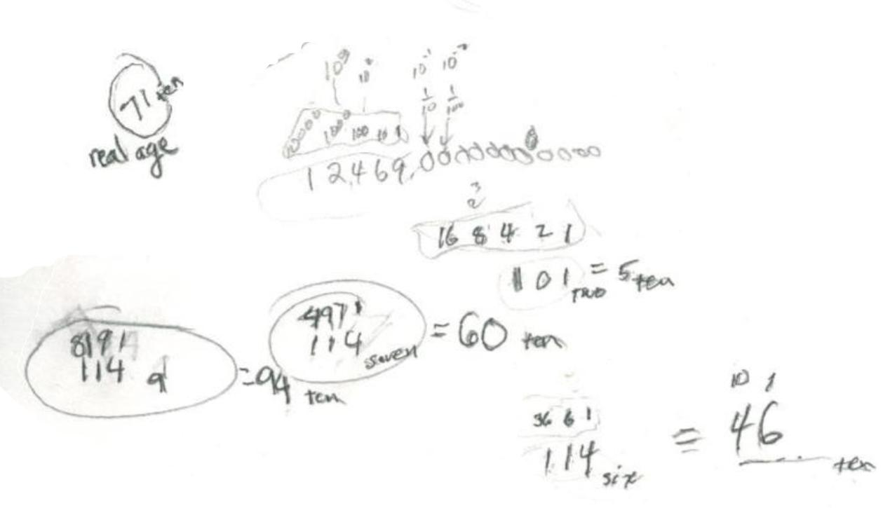

Sheri finding the base for Don's age of 114
Sheri had worked in binary to find the 'magic cards' secret. When Don told her he was 114 years old, she said "what base would that be in"? Then she proceeded to find out. She knew 101 in base 2 = 5 in base ten. They talked about the place values in different bases. In base 2 the places are ..16 8 4 2 1. In base 6 they are ..36 6 1. So 114six = 1x36 + 1x6 + 4x1 = 1x62 + 1x61 + 4x60 = 36+6+4 = 46ten . But she knew Don was 71 so base 6 was too small. She found in her work that 114seven = 60ten , so base 7 was too small. Then she tried base 9 and found 114nine = 1x81 + 1x9 + 4x1 = 94ten , so base 9 was too big. 114eight = 1x64 + 1x8 + 4x1 = 76ten , so base 8 was too big!

So Sheri, her Dad, and Don all realized that the base would have to be between 7 and 8!
[After Sheri and her Dad left, Don used the quadratic equation x2 + x + 4 = 71 to find the correct base x. Using the quadratic formula, Don found x = ( -1+ Sqrt (269))/2 ~ 7.700609733. When Don tried this, it worked! So Don's age of 114 in base 7.700609733 = 71ten.]